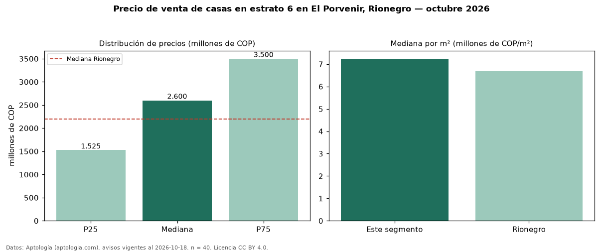

Precio de venta de casas en estrato 6 en El Porvenir, Rionegro — octubre 2026
Con 40 avisos vigentes, el precio mediano de casas en estrato 6 en venta en El Porvenir, Rionegro es COP 2,60 mil millones. Frente a la mediana de toda la vivienda de estrato 6 de El Porvenir (COP 2,38 mil millones, n = 49), queda 9 % por encima; este segmento reúne el 82 % de esos avisos. Por metro cuadrado, la mediana es COP 7,24 millones/m² (n = 38), 5 % por debajo del conjunto de referencia (COP 7,60 millones/m²). El área mediana anunciada es 362 m². El segmento con más oferta es el de 3 o más habitaciones (38 avisos, mediana COP 2,69 mil millones). La administración mediana declarada es COP 570.000 al mes (n = 21). La mitad central de los avisos va de COP 1,52 mil millones a COP 3,50 mil millones (razón 2,3), una dispersión alta. La mediana de todas las casas en venta de Rionegro es COP 2,20 mil millones (+18 % de diferencia). Datos: Aptología (aptologia.com), CC BY 4.0 — https://www.aptologia.com/casas-en-venta/rionegro/el-porvenir. Archivos: PDF, CSV con las cifras y gráfica PNG.

| Avisos únicos | 40 |
|---|---|
| Percentil 25 | COP 1.525.000.000 |
| Mediana | COP 2.600.000.000 |
| Percentil 75 | COP 3.500.000.000 |
| Mediana por m² | COP 7.241.883 |
Fuente: avisos vigentes de portales inmobiliarios recopilados por Aptología, deduplicados (mínimo 30 avisos únicos por celda). Precios pedidos, no cerrados. Fecha: 2026-10-18.